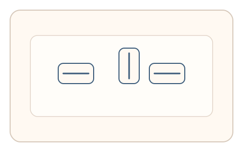
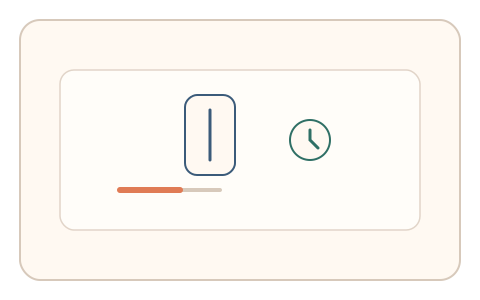
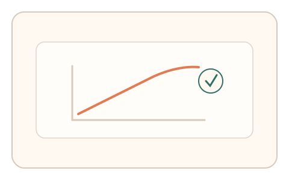

#75
视觉思考范式：文字与符号
已扩展
倒置阅读时间曲线
通过逐步旋转文本并记录可读范围内的反应时曲线，利用人类阅读姿态的时间函数验证真实性。
概念原文
逐步旋转文本（0°/90°/180°），让用户在“仍可读”的范围内完成短任务，记录反应时曲线。
通过阅读姿态的时间函数，而非内容识别，建立人类加工特征。
研究背景
文本旋转会显著增加阅读时间，人类在不同角度下的反应时具有稳定的非线性曲线。记录不同角度的完成时长与失败阈值，可形成区别于脚本的行为特征。
核心机制
- 提供多个旋转角度的短文本任务。
- 用户在仍可读的范围内完成简单操作。
- 记录各角度反应时与失败点。
- 多轮随机文本与角度建立曲线。
用户流程
- 步骤 1：用户看到不同旋转角度的文本卡片。
- 步骤 2：用户完成快速阅读任务。
- 步骤 3：系统记录时间曲线并判定。
判定信号
反应时随角度变化的曲线
人类阅读时间会随旋转角度非线性上升。
可读阈值角度
人类在高角度下存在稳定的失败区间。
判定逻辑
曲线斜率与阈值需符合人类分布；过于平坦或过度稳定的曲线判异常。
对抗面
- OCR 直接识别并绕过阅读过程
- 模拟固定时间曲线进行伪造
防御与缓解
- 随机化文本长度、字体与角度顺序
- 加入轻微扰动降低 OCR 直接识别
- 叠加鼠标轨迹与停顿信号进行多信号判定
可达性与风险
提供低角度替代任务或非文本方案，允许放慢节奏并支持键盘操作。
- 视力或认知差异导致反应时偏移
- 小屏设备上角度识别更困难
可视化状态

状态 1：多角度文本
文本以不同角度呈现。

状态 2：阅读计时
用户完成短任务并记录耗时。

状态 3：曲线判定
反应时曲线用于判定。
参考资料
Mental rotation
说明旋转对识别与处理时间的影响。
Reaction time
说明反应时作为行为指标的意义。